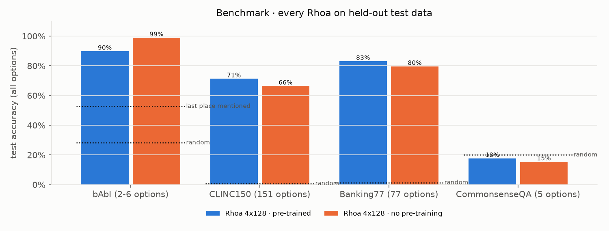
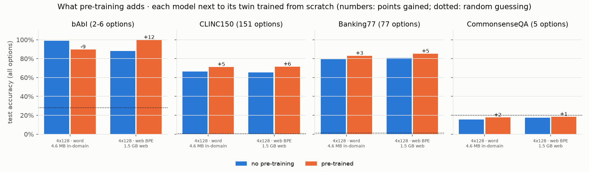
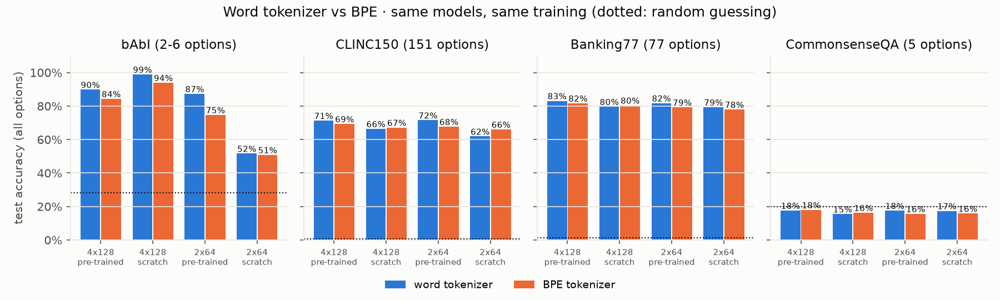
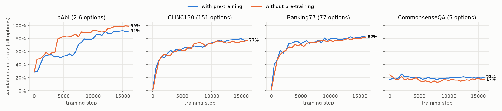
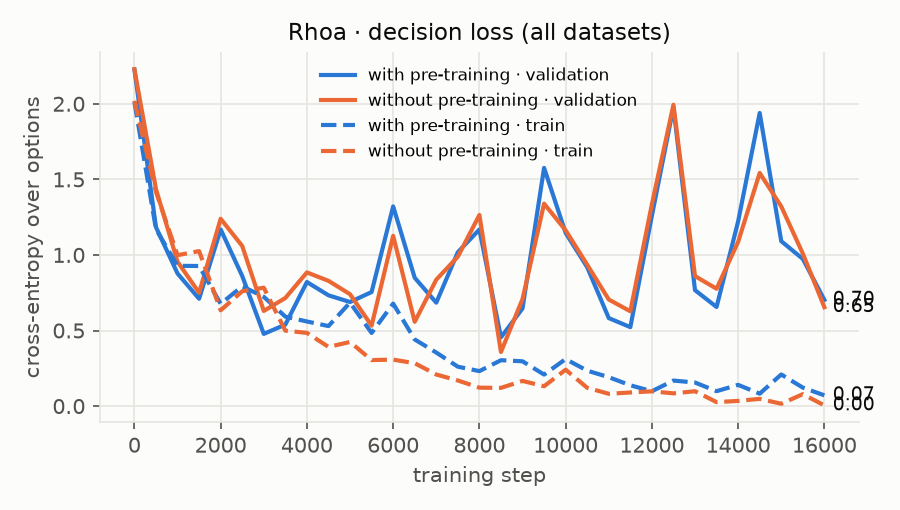
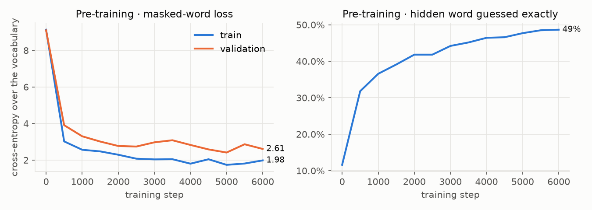
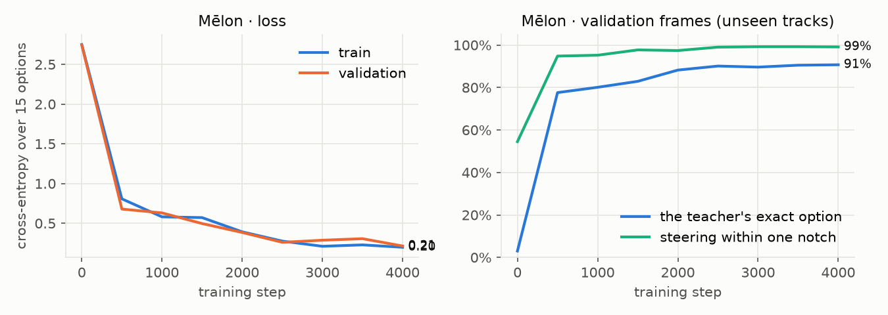
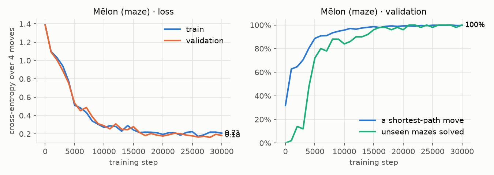
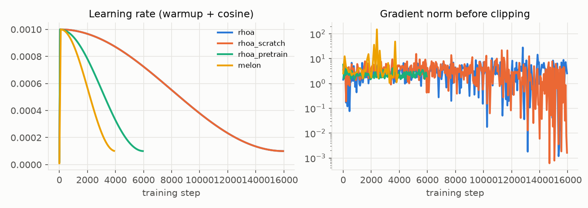

Little models that choose.
An LLM is a writer: it invents an answer word by word. A decision model is a judge: you give it the situation and the options, it gives every option a score, and the best one wins. Everything here is written from scratch in PyTorch, small enough to train in a few hours.
One little fruit full of seeds, like a decision full of options. Rhoa reads text: where is someone in a story, which of 151 intents a request means, the commonsense answer.
Paris looked at three goddesses and handed the apple to one. Mēlon looks at images: from the camera of a race car it picks how much to steer, accelerate or brake, and from a picture of a maze it picks the next move.
Try Rhoa
Rhoa runs in your browser (ONNX). Pick a real test question it never saw in training, or write your own situation and options, one per line.
Watch them decide
Mēlon drives a track it has never seen
Left: the camera. Right: the 15 options with Mēlon's probabilities, the chosen one in green.
Mēlon plays mazes it has never seen
From the picture alone it picks go up, down, left or right. No map, no search: just a judge.
Rhoa answers test questions
Real test questions, right or wrong. For 151 options, the most likely ones are shown.
Benchmark
Every model on held-out test data it never saw, with all the options, next to simple baselines. Does pre-training help? Each Rhoa size is fine-tuned twice: once after pre-training on ~1M words, once from random weights.









Run it yourself
git clone https://github.com/benisalla/tiny-dlms && cd tiny-dlms pip install -e ".[test,car,web]" python scripts/prepare_data.py # the datasets bash scripts/train_all.sh # sanity checks, then every model, with logs and graphs python scripts/car_drive.py --video melon.mp4